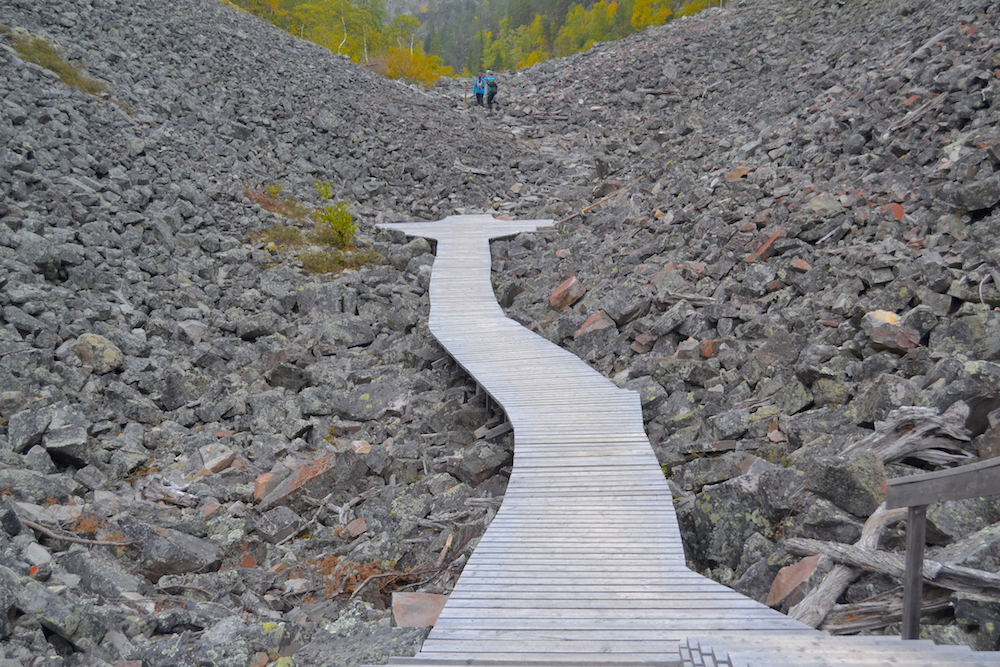

Autumn is a time of silence. A time to step back and calm down. Dramatic changing of seasons is best seen in Autumn in Lapland. If you can arrange your trip in this season you can take pleasure in seeing the so called “ruska”, the enchanting and colourful display of leaves. The leaves of trees change colour from green into beautiful shades of golden yellow, orange and red. The best time to experience Ruska is the first week in September.
Marvel of autumn colours!The unique wildlife of Lapland can be experienced throughout the year, but the most beloved icon of Finnish Lapland, the reindeers can be seen roaming free mostly in autumn. If you are driving in Lapland, you must always watch out carefully on the road to avoid collision with reindeers and moose. Large moose sometimes leap out of forest and onto road traffic, especially in early hours of morning.
 Nature photography: aesthetic pleasure.
Nature photography: aesthetic pleasure.
Autumn is a perfect time to hike or trek in Lapland’s mountains, fells and hilly landscape. The trekking paths are clearly marked and the scenery is picturesque. We recommend wearing comfortable waterproof shoes, as the ground is usually soggy and muddy in this rainy season.
Mini adventure: Hiking, walking, observing nature.While walking in forests the chances are that you will spot a reindeer or a group of them and take the opportunity to take photos of the animal. Although they are not aggressive, avoid getting too close to them, provoking or frightening them.
Walk quietly and you might spot wildlife in the wilderness!Pyhä-Luosto: a pilgrimage to Finland’s oldest national park
Finland’s oldest national park covers 142 square kilometres of old forests and wetlands. The 35-km-long fell chain in Pyhä-Luosto is a remnant of one of the Earth's oldest mountain ranges formed over 2000 million years ago.
 A journey to find the lost pieces of your puzzle!The Pyhä-Luosto national Park has many functions; it is for conserving nature, preserving indigenous people’s culture and serving as a destination for hiking and tourism. “Pyhä”, means ‘sacred' and “luosttat” means a reindeer with light-coloured stripes. So, begin your pilgrimage and discover your own most sacred site.
Peace and quiet: relax in the tranquillity of nature.Santa Claus village: meeting with the legendary man in red
Santa Claus Village is Lapland’s best-known attraction. It is the official home of Santa Claus. If you’re looking for a once in a lifetime, magical, fantasy-to-reality trip, Santa Claus village would be the best destination. You can visit Santa at his log cabin, he will welcome you into his own home and show you around.
Magical moments: meeting Father Christmas at his home in Lapland.Every year thousands of children and adults come to visit Santa Claus village to visit the jolly man in red, enjoy a private chat with him and take memorable pictures. You can also pay a visit the post office in which Santa receives the children’s mail from all corners of the world!
Have you ever dreamed of being in the set of your favourite Christmas movie? Visit Santa Claus village and your wish will be fulfilled!The Lumberjack’s Candle Bridge: Symbol of Rovaniemi
The Lumberjack’s Candle Bridge is one of the several bridges you'll find over the river in Roveniemi. But this bridge is special because of its unique shape. The bridge bears a memory from the times of timber floating and is homage to the lumberjack. On the top of two columns there is a lighting solution resembling the lumberjack’s candle, a log cut in two with a fire in between. It is the first cable-stayed tuft form bridge in Finland which was built in 1989. If you are in the area, then it's worth a photo. Best location is from the park on the riverbank next to the restaurant. The view of the bridge in autumn looks even more magnificent and stands out from its surroundings.
 Symbol of Rovaniem: the capital of Lapland in Finland.
Symbol of Rovaniem: the capital of Lapland in Finland.
The arctic circle hiking area
As you drive about 20 km to the northeast from Rovaniemi towards Sodankylä you find the Arctic circle hiking area. It is about 36 square kilometres and it is just a perfect area to visit when you long for pure nature experiences. You can never forget your experience of wilderness, feeling the power of untamed nature and realizing the smallness of the mankind. The peace, the quietness and the feeling that you are part of a much bigger picture.
Heaven on earth: glowing sky & glittering water.The diverse nature trails in the Arctic Circle Hiking Area are excellent for short hikes and day trips. They are great for enjoying the wilderness and learning about local natural life or cultural destinations. The trails feature colourful illustrated information boards that introduce the area. There are several pleasant rest spots and campfire sites along the route for eating packed meals and taking a break.
Mini adventure: Hiking, walking, observing nature.Cottage at Kemijärvi: relax in the tranquillity of nature
The classic Finnish holiday is best represented by the holiday cottage. The cottages feature three essentials for Finns: sauna, row boat and lake. Inside, the cottages are decorated in Scandinavian style and offer luxurious comfort for both families and groups of friends.
Peace and quiet: relax in the tranquillity of nature.Kemijärvi is situated above the Arctic Circle. The nature surrounding Kemijärvi is the perfect scenario for those who want to be active and experience fishing, hunting and boating as well as for those who want to relax and enjoy the peace and quiet.
Sauna is an essential part of a Finnish cottage.The beautiful Lake Kemijärvi, is surrounded by hills and old forests. You can either rent a row boat and enjoy the scenery from the lake or if you are a fishing enthusiast, you will find yourself right next to excellent fishing waters.
At Kemijärvi lake you can be active or relaxed, it’s your choice.How to reach
Lapland's airports are located in Finnish cities of Kemi, Rovaniemi, Kittilä, Enontekiö and Ivalo. Flights between capital of Finland, Helsinki to Lapland airports are between 1 and 1.5 hours. Rovaniemi, the capital of Lapland and hometown of Santa Claus is also easily reachable by the efficient VR train. There are several day and night trains with sleeper cabins between southern Finland and Lapland. In addition, there are several bus companies that can bring you from southern parts of Finland to north. Once you are in Finnish Lapland if you like you can continue from there either to Norwegian Lapland or Swedish Lapland by bus or car.
Driving is probably not the fastest way of reaching Lapland but it is one of the most beautiful and adventurous road trips.